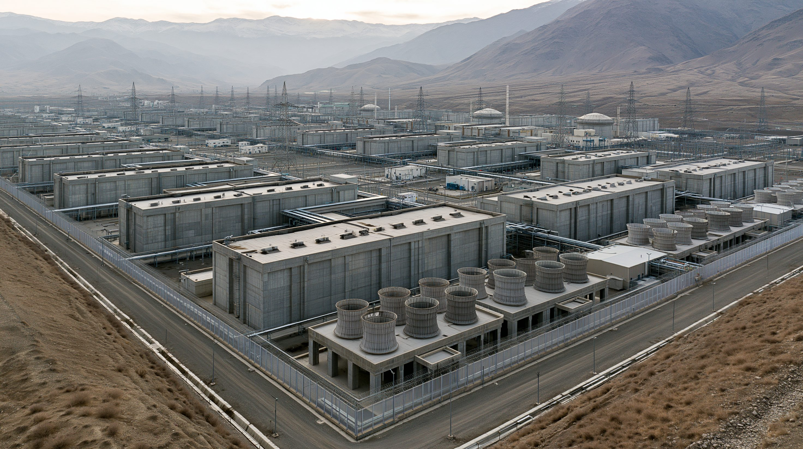
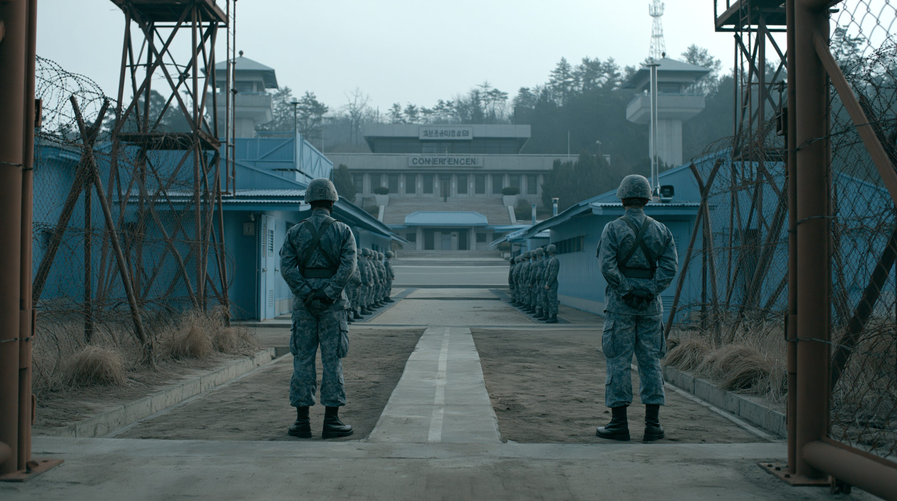
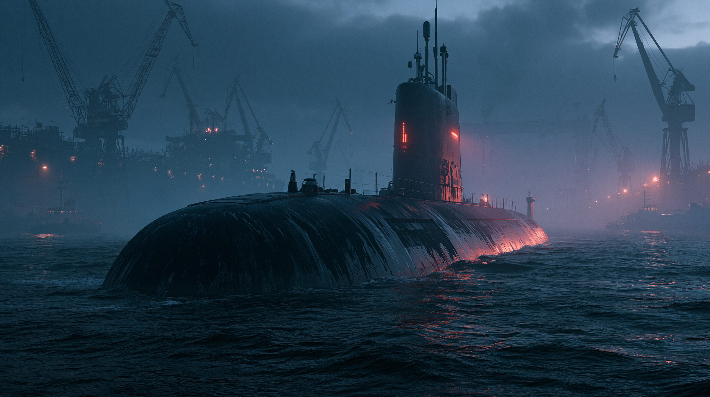

01核心と問い — 崩れた「非核化」の前提
「制裁で締め上げ、交渉で核を手放させる」——30年続いたこの前提は、ロシアという後ろ盾の出現で崩れた。実戦経験を積み、技術支援を受け、弾頭を増やし続ける北朝鮮を、世界はもう「非核化」できるのか。それとも「核を持つ隣人」として管理するしかないのか。
北朝鮮の核問題は長らく「いかに放棄させるか」という枠で語られてきた。だが2024年以降、その枠組み自体が現実から乖離し始めている。ウクライナ戦争でロシアに兵を送り、見返りに国連制裁の無力化と兵器技術を得た北朝鮮は、もはや孤立した挑戦者ではない。核は体制の保険から、実戦と外交で裏打ちされた既成事実へと変わりつつある。その変質を、ロシアの後ろ盾・実戦経験・兵器の質的飛躍という3つの構造から読み解く。
3つの論点
ロシアの後ろ盾 — 制裁体制の崩壊
2024年6月の相互防衛条約で、ロシアは国連での新規制裁を阻止し、北朝鮮の核開発への反対を撤回した。30年機能してきた「制裁による圧力」の前提が、安保理常任理事国の離反で土台から崩れている。
実戦経験 — 軍隊の質的変化
ウクライナ戦線への派兵で、北朝鮮軍は近代的な戦闘戦術とドローン戦の実戦データを獲得した。多大な死傷を出しつつも、「実戦を知らない軍隊」という長年の弱点を埋めつつある。
兵器の飛躍 — 量から質へ
固体燃料ICBM（大陸間弾道ミサイル）、複数弾頭化、核搭載潜水艦。ロシアの技術支援を背景に、北朝鮮の戦略兵器は「数を揃える」段階から「質で迫る」段階へ移行しつつある。
用語解説
相互防衛条約（2024年）
2024年6月、プーチン大統領が訪朝し金正恩総書記と署名した「包括的戦略パートナーシップ条約」。一方が武力侵攻を受けた場合、他方が軍事援助を含む支援を提供すると定める事実上の同盟条項を含む。冷戦期の1961年条約以来の相互防衛の復活であり、北朝鮮の対ロ兵員・弾薬供与と、ロシアの対北技術・経済支援を双方向に正当化する枠組みとなった。

北朝鮮の核濃縮プラントは、IAEA（国際原子力機関）の査察が一切入らないまま拡張が続いている。衛星画像の分析では、濃縮施設の規模が2022年以降に顕著に拡大したことが確認されている。核分裂性物質の蓄積は「指数関数的成長」の段階に入りつつあるとされる。※イメージ画像（生成AI）
02タイムライン — 孤立から「ロシアの後ろ盾」へ
2017年
核戦力完成宣言とICBM試射ラッシュ
火星15を含むICBM（大陸間弾道ミサイル）試射を重ね、金正恩は「国家核武力の完成」を宣言。アメリカ本土を射程に収める能力を誇示し、米朝の緊張が頂点に達した。
米本土到達能力を誇示
最大限の圧力と制裁
2018〜19年
米朝首脳会談と決裂
シンガポール・ハノイで史上初の米朝首脳会談が開催された。だが非核化の定義をめぐり物別れに終わり、外交は失速した。トップ交渉の限界と非核化定義の深い溝が露わになった。
トップ外交の限界
非核化定義の溝
2022年
ICBMモラトリアム破棄・ミサイル乱射
自ら課した発射凍結を破棄し、年間を通じて過去最多の弾道ミサイルを発射した。試射の常態化で瀬戸際戦術に回帰し、外交による解決への可能性は遠のいた。
自主凍結の放棄
試射の常態化
2024年6月
露朝相互防衛条約
プーチン大統領が訪朝し、相互防衛条項を含む条約に署名した。国連安全保障理事会の常任理事国が北朝鮮の側に立つ構図が生まれ、30年続いた制裁体制の基盤が崩れ始めた。
事実上の同盟復活
制裁体制の空洞化
2024年10月
ウクライナへの派兵開始
北朝鮮がロシア・クルスク州へ部隊を派遣した。冷戦後初の本格的な海外実戦投入となり、北朝鮮軍は近代的なドローン戦・砲兵戦の実戦データを獲得した。
初の大規模派兵
実戦データの獲得
2025年10月
火星20を公開
固体燃料ICBM「火星20」を軍事パレードで公開した。射程15,000km超で複数弾頭化を狙う高推力エンジンを誇示し、アメリカ本土全域を即時発射能力で射程に収める段階へ進んだ。
固体燃料ICBM
複数弾頭化の布石
2026年
ミサイル試射が前年超え・原潜艦体ほぼ完成
2026年に入り4カ月で弾道ミサイル20発超・巡航ミサイル16発超を発射し、前年実績を上回るペースで試射が続いている。6月には核搭載潜水艦の艦体がほぼ完成した写真が公開された。
試射ペースが加速
核搭載潜水艦が前進
2026年6月
監視グループが露朝同盟を「違法」認定
韓国・アメリカ・日本など11カ国の制裁監視グループが、露朝の軍事協力を国連制裁違反と認定した。だが国連安全保障理事会ではロシアが拒否権を握り、実効性は限られる。
多国間で違法認定
安保理は機能不全
2024年6月の相互防衛条約署名は、北朝鮮の核問題における決定的な転換点だった。制裁と圧力によって孤立させるという30年来の戦略は、常任理事国であるロシアの離反によって根底から崩れた。露朝の接近は、北朝鮮の核開発を後押しする構造的な変化をもたらしている。※イメージ画像（生成AI）
036つの視点
「核は交渉の道具ではない。体制と国家の生存そのものだ」
核保有の既成事実化
金正恩は核を憲法に明記し、非核化交渉そのものを拒否している。リビアやウクライナの例を引き、「核を手放した国の末路」を体制存続の論拠にしている。核は交渉カードではなく、体制が存続するための絶対条件として位置づけられた。
ロシアとの取引で得た飛躍
派兵と弾薬供与の見返りに、ミサイル・潜水艦技術と経済支援、制裁回避を得た。孤立を脱し、後ろ盾を持つ核保有国として振る舞う余裕が生まれている。ロシアとの同盟は、北朝鮮の戦略的立場を根本から変えた。
「対話の扉は開くが、抑止の備えは緩めない」
関与政策の手詰まり
李在明政権は対話による緊張緩和を掲げるが、金正恩が前提条件としてアメリカと韓国の「敵視政策」撤回を求め、接点を欠く。一年を経ても目に見える進展は乏しく、関与政策は実質的に機能不全に陥っている。
自前の抑止力強化
国防費を国内総生産（GDP）比3.5%へ引き上げる方針で、2026年予算を増額した。米韓の原潜協力も進め、世論の一部では独自核武装論もくすぶっている。対話と抑止の双方を同時に追う難しいバランスが続く。
「中東とウクライナに追われ、北朝鮮は後回しになっている」
非核化目標の形骸化
公式には非核化を掲げ続けるが、中東・ウクライナへ関心が分散している。北朝鮮対応の優先順位を割けず、結果として現状を黙認するリスクが高まっている。非核化という目標は掲げたまま、実質的な政策が空白になりつつある。
トップ取引への誘惑
トランプ大統領は金正恩との首脳会談再開に意欲を示すが、非核化を棚上げした「軍縮取引」は同盟国の韓国・日本の不安を呼ぶ。手柄優先の外交が抑止の枠組みを揺さぶるリスクを抱えている。
「兵と弾薬を得る代わりに、北朝鮮の核を黙認する」
制裁体制からの離反
ウクライナ戦争で消耗するロシアは、北朝鮮の兵員と砲弾を必要とし、その見返りに国連制裁の執行を妨害している。かつて非核化を支持した立場を事実上撤回し、制裁体制の機能を骨抜きにした。
技術移転というリスク
潜水艦の推進系やミサイル技術の移転が疑われ、北朝鮮の戦略兵器を一段押し上げる恐れがある。短期の戦争協力が、長期の核拡散リスクに転化している。ロシアが戦況に窮するほど、対価を引き上げる誘惑は強まる。
「北朝鮮の安定は望むが、露朝の過度な接近は歓迎しない」
緩衝地帯としての北朝鮮
中国は北朝鮮の体制崩壊と難民流入、米韓軍の北上を避けたい。核そのものは望まないが、北朝鮮を対米の戦略的緩衝として維持する利益が優先する。体制の安定が中国にとっての最優先事項であり、非核化はその次に来る。
露朝接近への警戒
ロシアが北朝鮮への影響力を強めることは、中国の対北レバレッジを相対的に弱める。表立って批判はしないが、露朝の軍事的密着には距離を置き、独自の関与を保とうとしている。北朝鮮が中国の影響圏から離れることへの静かな警戒が続く。
「すべての弾道ミサイルが、すでに日本を射程に収めている」
直接の脅威としての核・ミサイル
日本は北朝鮮の短中距離弾道ミサイルの射程内にあり、頻発する試射は防空・避難態勢に直結する。反撃能力の保有と日米同盟の抑止力強化を急いでいるが、核の影の下での抑止の実効性には不透明さが残る。
拉致問題という固有の懸案
核・ミサイルと並び、未解決の拉致問題が対北朝鮮政策の制約となる。安全保障と人道的懸案の双方を抱え、対話と圧力のバランスに苦慮している。この二重の課題は、日本独自の対北朝鮮外交を根本的に複雑にしている。
| 立場 |
基本スタンス |
最大の主張 |
課題・懸念 |
| 北朝鮮 | 核の既成事実化 | 核は体制の生存そのもの | 露依存と経済の脆弱さ |
| 韓国 | 対話と抑止の両立 | 関与で緊張を緩和 | 金正恩が前提条件で拒否 |
| アメリカ | 関心の分散 | 公式には非核化を維持 | 現状黙認と取引の誘惑 |
| ロシア | 兵力との交換 | 兵員と砲弾を確保 | 技術移転が核拡散を招く |
| 中国 | 緩衝国家の維持 | 体制崩壊を避けたい | 露朝接近で対北影響力が低下 |
| 日本 | 射程内の脅威 | 反撃能力で抑止 | 拉致問題と防衛のジレンマ |

板門店の非武装地帯（DMZ）は、朝鮮半島の分断と対立を象徴する場所であり続けている。6つの視点が示すように、北朝鮮の核をめぐる利害と立場は当事国ごとに大きく異なり、単一の解決策が存在しない構造的な対立が続いている。※イメージ画像（生成AI）
04データ・統計
核弾頭保有数の推移と予測
実装済みは約50発だが、核分裂性物質の蓄積から2027年に90発、2030年に100発に達するとの推計。IAEA（国際原子力機関）は「指数関数的成長」と警告している。出典：各種シンクタンク推計、IAEA
主要なICBM（大陸間弾道ミサイル）の射程比較
いずれもアメリカ本土全域を射程に収める。火星20は固体燃料で即時発射性が高く、複数弾頭化を狙う。出典：防衛省、各種公開情報
北朝鮮の主要ミサイル一覧
| 名称 |
射程 |
特徴 |
| 火星15 |
約13,000km |
液体燃料ICBM。アメリカ本土東海岸まで到達可能 |
| 火星17 |
15,000km超 |
大型液体燃料ICBM。複数弾頭の搭載が可能とされる |
| 火星20 |
15,000km超 |
固体燃料ICBM。即時発射性が高く2025年公開 |
| 北極星系 |
潜水艦発射型 |
SLBM（潜水艦発射弾道ミサイル）。第二撃能力の中核 |
液体から固体燃料へ、地上発射から海中発射へ——残存性と即応性を高める方向に進化している。
注目の数字
約1.1万
ウクライナ戦線への派兵規模（クルスク州、人）
15,000km超
火星20の推定射程（アメリカ本土全域が射程内）
05深掘り — これから2〜3年で何が起きるか
露朝接近は、北朝鮮の核問題を「放棄させる対象」から「共存を強いられる現実」へと変えつつある。非核化・技術移転・米朝外交・地域の軍拡という4つの軸で、今後2〜3年を見通す。
非核化の終焉 — 目標は「軍縮・管理」へ移行するか
30年掲げてきた「完全な非核化」は、北朝鮮の弾頭増加とロシアの後ろ盾の前で現実味を失いつつある。今後の焦点は、放棄ではなく「これ以上増やさせない」「偶発的使用を防ぐ」という軍備管理へ目標が事実上スライドするかどうかだ。だがそれは北朝鮮を核保有国と認める含意を持ち、韓国・日本の安全保障観を根本から揺さぶる。
露朝技術移転のリスク — 潜水艦・複数弾頭・再突入体
最大の不確実性は、ロシアがどこまで機微技術を渡すかだ。核搭載潜水艦の推進系、複数弾頭化、再突入体の精度——これらが移転されれば、北朝鮮の核戦力は「数」だけでなく「残存性と命中精度」で質的に跳ね上がる。ウクライナ戦争が長引くほど、ロシアが対価を引き上げる誘惑は強まる。MIRV（複数個別誘導再突入体）技術の共有は、特に深刻な核拡散リスクとなりうる。
米朝再交渉の可能性 — トランプと金正恩の「取引」シナリオ
トランプ大統領が金正恩との首脳会談を再開する可能性は残る。だが非核化を棚上げした「現状凍結＋制裁緩和」型の取引は、北朝鮮の核保有を追認しかねない。同盟国の頭越しに進む取引は、韓国・日本の信頼と、アメリカの拡大抑止の信頼性を同時に損なうリスクを抱える。手柄優先の外交が、地域の安全保障の枠組みを内側から崩す危険がある。
朝鮮半島の軍拡連鎖 — 韓国の独自核論と日本の防衛転換
北朝鮮の核の既成事実化は、韓国世論の独自核武装論を勢いづかせ、日本の反撃能力保有と防衛費増額を後押しする。北東アジアは、北朝鮮一国の核を起点に、韓国・日本・そして中国を巻き込む軍拡の連鎖へ向かう圧力にさらされている。「一国の核」が「地域の軍拡」へと波及するスパイラルが、すでに動き始めている。
北朝鮮の核は、もはや「いつ手放すか」を問う段階を過ぎ、「どう共存し、どう増やさせないか」を問う段階に入りつつある。ロシアという後ろ盾を得た核保有国を前に、非核化という旗を下ろさないまま、現実をどう管理するか——その難題は、核を手放した国の末路を知る世界にこそ、重く突きつけられている。

核搭載潜水艦の実戦配備は、北朝鮮の核戦力に「第二撃能力」をもたらす。先制攻撃を受けても海中から報復できる能力は、抑止の構図を根本から変える。SLBM（潜水艦発射弾道ミサイル）を持つ北朝鮮という現実を、国際社会はどう管理するのか——その問いへの答えはまだない。※イメージ画像（生成AI）
06情報源・参考メディア
38 North — Tracing Russian Linkages in North Korea's Expanding Nuclear Complex
露朝の核協力と濃縮施設拡張の衛星画像分析。北朝鮮研究の専門メディア。
【スティムソン・センター（米）】
FDD's Long War Journal — Russian Security Assistance on the Korean Peninsula
露朝の安全保障協力が朝鮮半島に与える影響の実証分析。
【民主主義防衛財団（米）】
Heritage Foundation — The Potential for Russia to Supercharge North Korea's Nuclear and Missile Program
ロシアの技術支援が北朝鮮の兵器開発を加速させる経路の分析。
【ヘリテージ財団（米）】
AEI — Korean Peninsula Update
朝鮮半島情勢の定期分析。米韓同盟・北朝鮮の軍事動向を継続追跡。
【アメリカン・エンタープライズ研究所】
Council on Foreign Relations — How North Korea Has Bolstered Russia's War in Ukraine
北朝鮮の対ロ兵員・弾薬供与の実態と見返りの包括分析。
【外交問題評議会（米）】
IAEA / CRS — North Korea's Nuclear Weapons and Missile Programs
弾頭数推計・ミサイル射程・核計画の公的データ。
【国際原子力機関・米議会調査局】